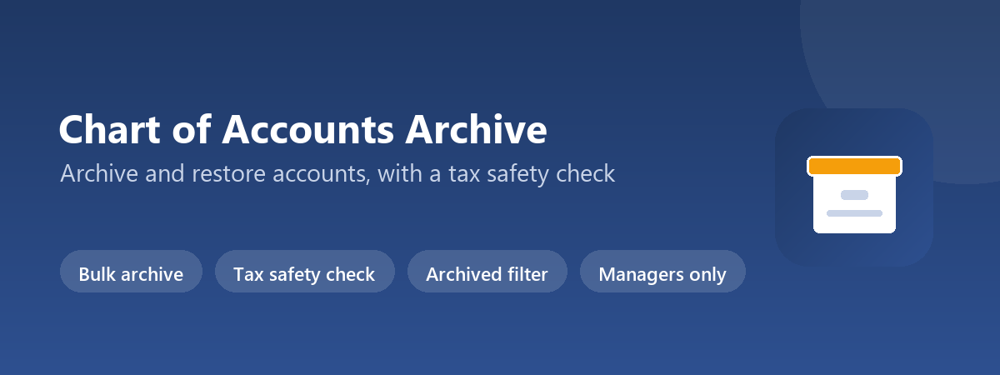

Archive the accounts you no longer use, and bring them back whenever you need them.
Odoo has no Archive button on accounts. This app adds Archive and Unarchive to the Chart of Accounts, for one account or a whole selection. An archived account stays out of account pickers and takes no new journal entries, while everything already posted on it stays in your books.
📦 Archive and UnarchiveArchive one account or a whole selection from the Actions menu, and restore them the same way. |
👁 Clear at a glanceArchived accounts are greyed out in the list and carry an Archived ribbon and switch on the form. |
🔍 Archived filterA ready-made filter lists the archived accounts so you can review or restore them at any time. |
🛡 Tax safety checkAn account that a tax still posts to cannot be archived, and the message names the accounts and the taxes to fix first. |
Odoo 18.0 • Community & Enterprise • depends on Invoicing • Licence LGPL-3
Odoo implementation and development. thecodelegion.com